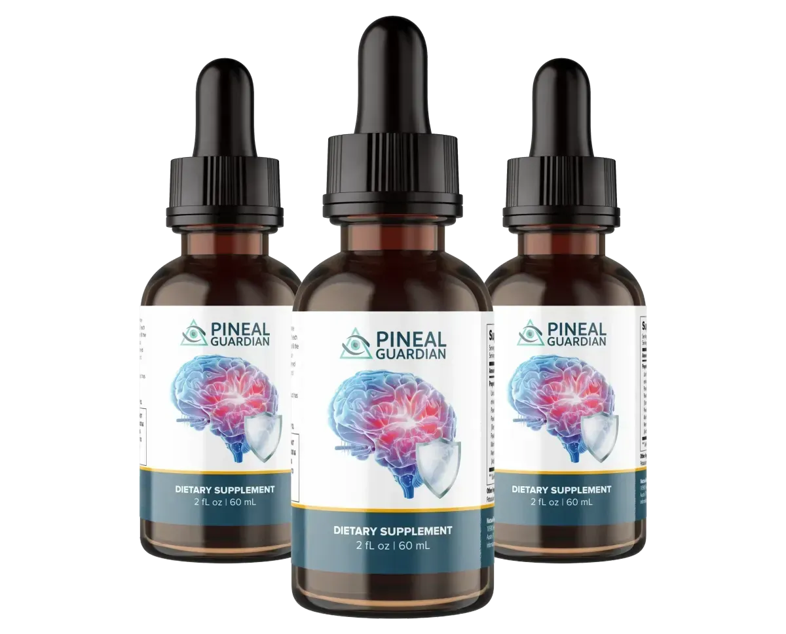

Internal Research Leak: Senior Cognitive Health
The "Pineal Shield" Mystery: Why Americans are Losing Focus.
Government studies show a shocking link between common water additives and the "calcification" of a tiny gland in your brain. This "crust" is the real reason behind your mental fatigue and memory gaps.
Available only through the official channel



12,400+ Verified
Customers in the USA